This Week's Technical Progress
Sequential Data Packet Lifecycle: System Topology & Node Architecture
 Tier 3: ChirpStack v4 Server (Local VM)
Tier 3: ChirpStack v4 Server (Local VM)
 Tier 4: PostgreSQL & Grafana (Local VM)
Tier 4: PostgreSQL & Grafana (Local VM)
 Hyperledger Fabric (Future Concept)
Hyperledger Fabric (Future Concept)
The Core Problem: Farm Data Blindspots
Why traditional farm monitoring fails to deliver real-time field visibility.
- Broad Regional Forecasts: Commercial weather stations located miles away on high towers measure macro air currents, missing the distinct microclimates created inside dense crop foliage.
- Canopy Blindspots: Standard forecasts measure ambient air 10 meters off the ground, failing to detect leaf-level humidity trapped under plant leaves where fungal spores germinate.
- Delayed Local Readings: Public weather reports update hourly or daily, missing sudden microclimate shifts like flash humidity spikes after morning dew.
- Recurring SIM Costs: Commercial cellular ag-tech sensors charge $5 to $10/month per node in subscription fees, creating steep recurring bills for 50+ field nodes.
- Closed Cloud Portals: Commercial vendors lock farm data behind proprietary cloud paywalls, charging extra fees for raw data exports and API access.
- Proprietary Hardware Lock-In: Vendor lock-in forces farms to purchase expensive replacement probes from a single vendor with zero interoperability.
Master Architecture & System Topology Map
Comprehensive end-to-end dataflow diagram detailing microservices, protocols, and hardware tiers.

Node 1: Dragino LSN50v2-S31 Industrial Sensor Probe
Data packet originates as physical electrical resistance variations inside field crop probes.
Industrial outdoor sensor probe evaluated on our lab bench that measures temperature, leaf humidity, and soil moisture directly inside plant foliage.
Measures moisture right at leaf level, giving farmers early warnings when high humidity (>85% RH) creates plant disease risks like mold or fungus.
Beats distant weather stations miles away on high poles that measure high air, missing the moisture trapped deep inside crop rows.
Executive Summary & Weekly Takeaways
Reflecting on completed local software setup milestones and future hardware roadmap.
- Hardware Bench Testing: Evaluated Dragino field probes & Milesight UG65 base station gateway in lab bench environment.
- Local VM Server Stack: Configured ChirpStack network server decoders, security keys, and data translators in local Docker VM.
- Time-Series Database & UI: Connected PostgreSQL time-series database & live Grafana visual scoreboards on local VM ports.
- Automated Rule Watchman: Built sub-second Node-RED rule engine for instant hazard detection and free Telegram mobile alerts.
- Tower Gateway Masts: Assemble physical Raspberry Pi 4 + RAK5146 gateway tower masts once transit hardware arrives.
- Solar Field Nodes: Deploy solar-powered WisBlock field sensor nodes and calibrate Soil NPK nutrient probes.
- Enterprise Blockchain: Connect Node-RED automation to Hyperledger Fabric enterprise blockchain for immutable crop export logs.